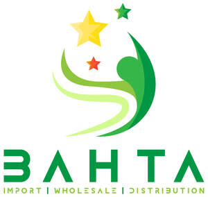

Trade Mark Journal No.2025/031 1 August 2025
UK00004236434 19 July 2025 (11)

- Class 11
- Griddles, electric; Electric griddles; Electric skillets; Skillets (Electric -); Frypans (Electric -); Electric cooktops; Electric griddles [cooking appliances]; Electric ovens; Electric rotisseries; Electric toaster ovens; Electric stoves; Electric grills; Electric hobs; Electric pans; Griddles [electric cooking utensils]; Electric woks; Woks (Electric -); Electric cookers; Electric hotplates; Electric toasters; Electric broiling pans; Stockpots (Electric -); Electric cooking ovens; Electric frying pans; Frying pans, electric; Frying pans (Electric -); Electric kitchen ovens; Electric bread cookers; Electric saucepans; Saucepans (Electric -); Electric heaters; Pans (Electric cooking -); Electric cooking stoves; Domestic frying pans [electric]; Electric egg cookers; Domestic rotisseries [electric]; Electric furnaces; Electric casseroles; Portable electric heaters; Electric coffeepots; Coffeepots, electric; Electric boilers; Waffle irons, electric; Electric waffle irons; Electric sandwich toasters; Electric dehydrators; Electric kettles; Kettles, electric; Steamers (Electric -) for cooking; Electric roasters; Electric oven ranges; Electric hot plates; Gas-powered griddles [cooking appliances]; Couscous cookers, electric; Electric broilers; Electric samovars; Oil-free electric fryers; Tajines, electric; Roasting spits [electric] for use with electricity; Radiators, electric; Electric radiators; Electric egg boilers; Portable electric fires; Foldable kettles, electric; Tagines, electric; Sous-vide cookers, electric; Electric sous-vide cookers; Electric rice cookers; Electric outdoor grills; Electric cooking utensils; Cooking utensils, electric; Electric utensils for cooking; Electric indoor grills; Electric refrigerators; Domestic bread toasters [electric]; Electric pots for cooking; Electric cooking pots; Cooking pots, electric; Electric fires; Electric heating cables; Autoclaves, electric, for cooking; Electric autoclaves for cooking; Electric lamps; Lamps (Electric -); Electric torches; Hot pots, electric; Cordless electric kettles; Roasting spits [electric] for use with gas; Kitchen machines (Electric -) for cooking; Heating filaments, electric; Electric heating filaments; Filaments, electric (Heating -); Electric water heaters; Electric waffle maker; Pressure cooking saucepans, electric; Electric pressure cooking saucepans; Saucepans (Pressure cooking -), electric; Electric plate warmers; Electric firelighters; Heating apparatus, electric; Electric heating apparatus; Electric blankets; Electric domestic cooking appliances; Electric heating fans.
HENOK ABRAHAM